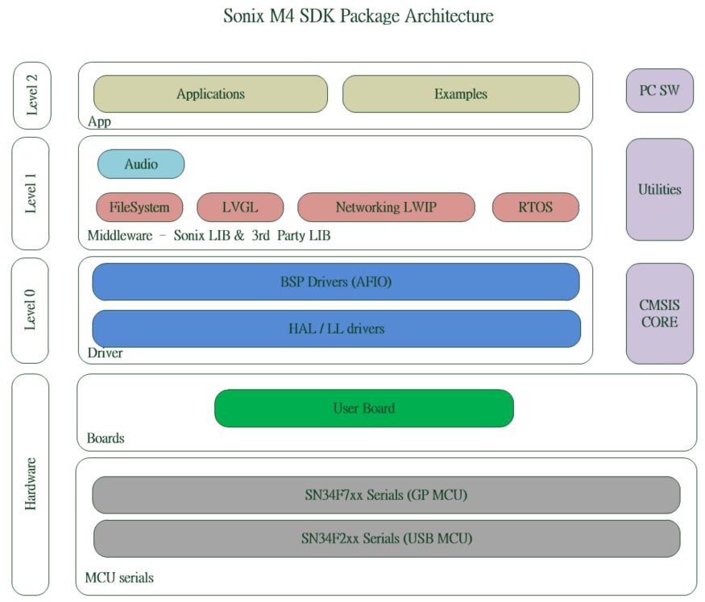
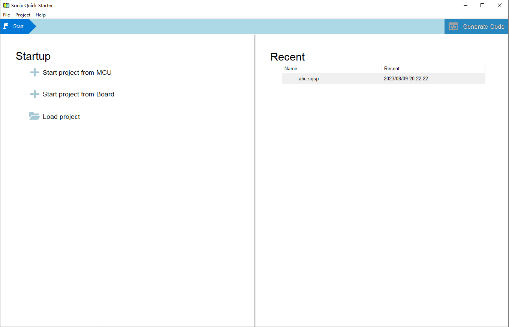

SN34F78X系列微控制器是基于Arm®Cortex® M4 processors.通过硬件抽象层驱动（hardware abstraction layer）SDK驱动可以简化硬件操作，
较为快捷的完成相关的应用开发。
SN34F78X SDK 定义了一些通用的驱动接口和一些较为实用的模块，方便用户高效的应用到自己的开发中。
组件
结构
SN34F78X隶属于SONiX M4 Package。其相关的结构说明可参考下图

SONiX M4 SDK Package Architecture
The Content of SN34F78X SDK contains:
- Hardware层，对应于SONiX提供的开发板或是用户自己定义的开发板
- Level 0，对应于相关的外设的驱动层面包括HAL，LL，以及相关的AFIO的BSP设定
- Level 1，中间层继承了一些第三方库，以及基于Level 0实现的SNONiX library.
- Level 2，应用工程以及对应于Level 0的一些Demo Sample
工程开发
使用者可以通过两种方式在SN34F78X上进行应用程序开发
- SONiX QuickStarter应用开发环境创建;
此环境继承了SN34F78X驱动和模块。可针对用户所选择的驱动或者模块动态产生相关的初始化code。目前只支持Keil Project的产生。
使用可以从以下几个方法来开始自己的工程。
- 可以从所支持的board中产生keil project
- 可以从所支持的Package中产生keil project

SONiX QuickStarter 界面
- 手动创建; 通过Keil IDE，产生工程，具体参考下图
- 工程说明
- 通过keil package 安装页面安装SONiX.SN34F7_DFP pack
- 需要支持CMSIS
- 文件包含关系
- 拷贝SDK所提供的SN34F78X_Conf.h的模板文件到当前工程
- 根据工程所需，在SN34F78X_Conf.h中打开对应的外设开关
- 在sn34f78x_hal_msp.h中初始化相关外设的时钟，AFIO
- 在sn34f78x_it.h中实现相关IP的中断服务函数
- 工程中相关的文件包含关系参考如下：
编码规则
代码类型和通用约定参考:
- Compliant with ANSI C (C99) and C++ (C++03).
- Uses ANSI C standard data types defined in <stdint.h>.
- Variables and parameters have a complete data type.
- Expressions for #define constants are enclosed in parenthesis.
- Conforms to MISRA 2012 (but does not claim MISRA compliance). MISRA rule violations are documented.
标识符定义的一般约定：
- CAPITAL names to identify Core Registers, Peripheral Registers, and CPU Instructions.
- CamelCase names to identify function names and interrupt functions.
- Namespace_ prefixes avoid clashes with user identifiers and provide functional groups (i.e. for peripherals).
HAL实现中通过Doxygen语法内嵌文档说明:
- Comments that use the C or C++ style.
- Doxygen compliant function comments that provide:
- brief function overview.
- detailed description of the function.
- detailed parameter explanation.
- detailed information about return values.
Doxygen 注释举例：
/**
* @brief Enable Interrupt in NVIC Interrupt Controller
* @param IRQn interrupt number that specifies the interrupt
* @return none.
* Enable the specified interrupt in the NVIC Interrupt Controller.
* Other settings of the interrupt such as priority are not affected.
*/
License
The HAL Driver is provided free of charge by Arm under the Apache 2.0 License.
SN34F78X SDK Directory
| Directory | Content |
| Documents | SN34F78X基础规格说明 |
| Board | 和当前SDK说观念的开发板AFIO信息 |
| SDK | 包含外设驱动相关实现，外设sample code，SDK使用文档以及第三方库 |
| Application | SDK关联的应用程序 |